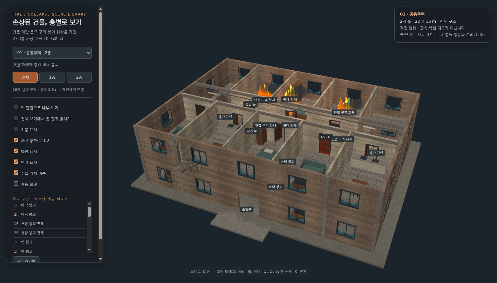
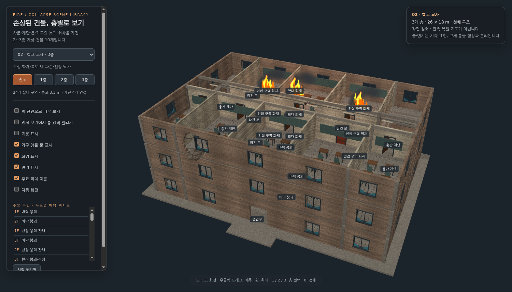
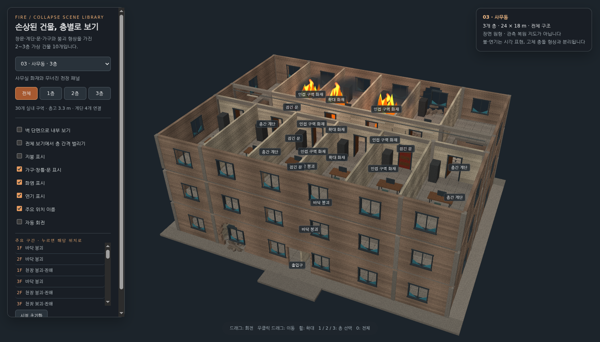
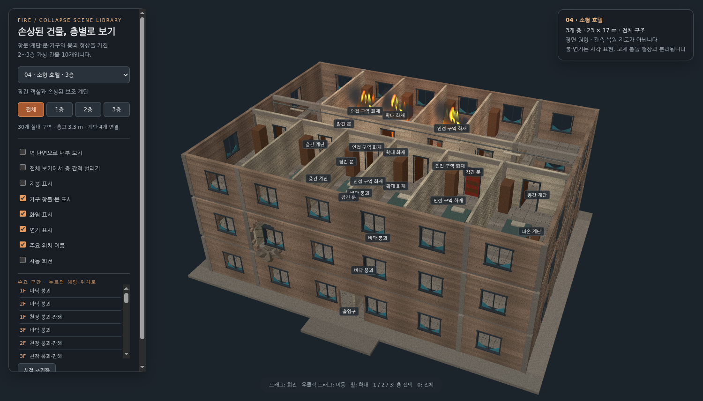
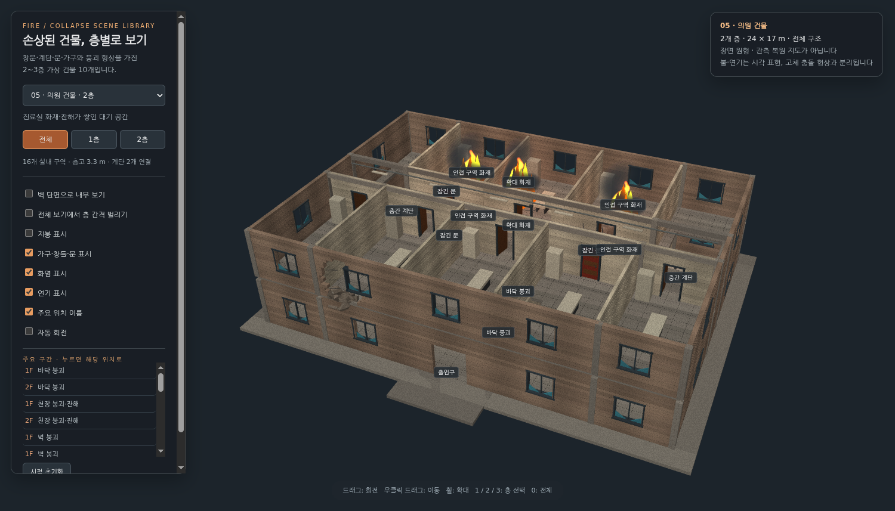
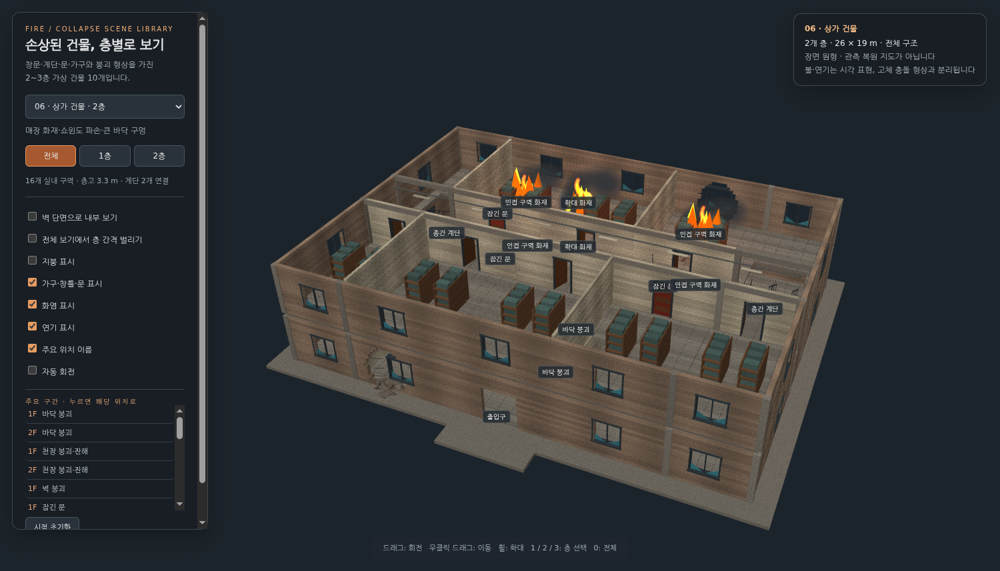
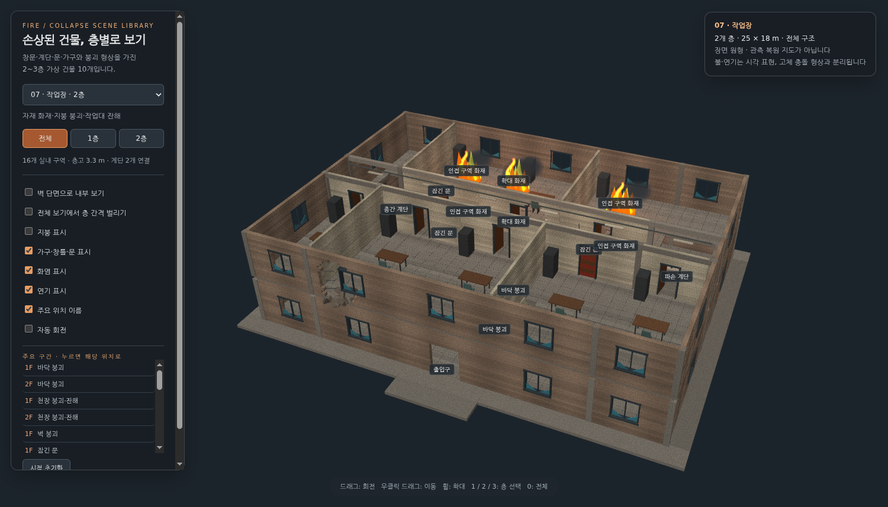
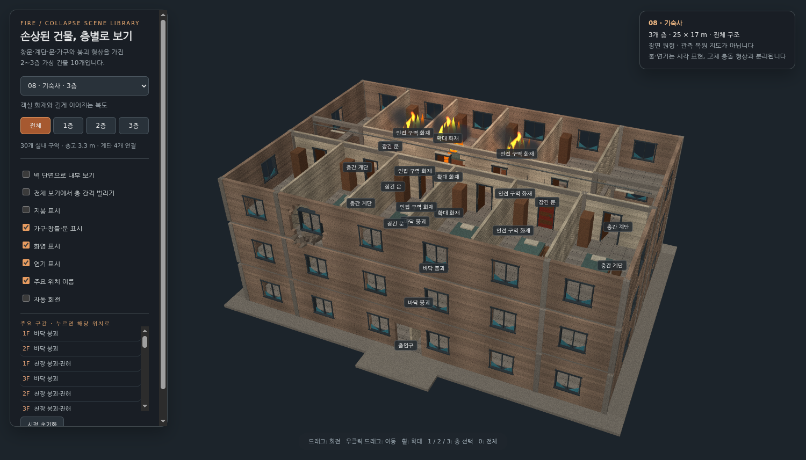
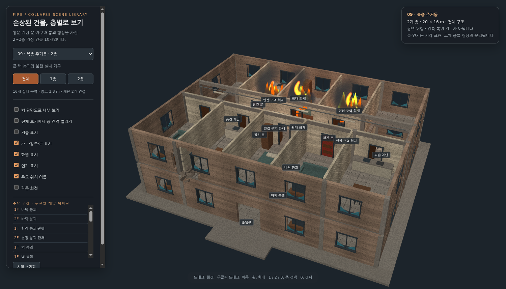
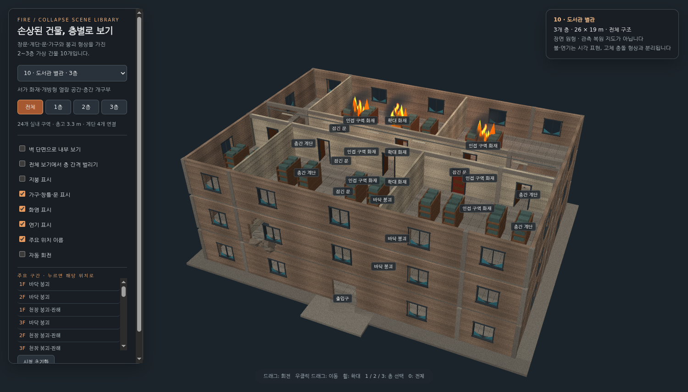

01 · 공동주택
2층 · 22 × 16m · 창문 27개
거실 화재와 층간 바닥 붕괴

02 · 학교 교사
3층 · 26 × 18m · 창문 41개
교실 화재·복도 벽 파손·천장 낙하

03 · 사무동
3층 · 24 × 18m · 창문 48개
사무실 화재와 무너진 천장 패널

04 · 소형 호텔
3층 · 23 × 17m · 창문 48개
잠긴 객실과 손상된 보조 계단

05 · 의원 건물
2층 · 24 × 17m · 창문 27개
진료실 화재·잔해가 쌓인 대기 공간

06 · 상가 건물
2층 · 26 × 19m · 창문 27개
매장 화재·쇼윈도 파손·큰 바닥 구멍

07 · 작업장
2층 · 25 × 18m · 창문 27개
자재 화재·지붕 붕괴·작업대 잔해

08 · 기숙사
3층 · 25 × 17m · 창문 48개
객실 화재와 길게 이어지는 복도

09 · 복층 주거동
2층 · 20 × 16m · 창문 27개
큰 벽 붕괴와 불탄 실내 가구

10 · 도서관 별관
3층 · 26 × 19m · 창문 41개
서가 화재·개방형 열람 공간·층간 개구부